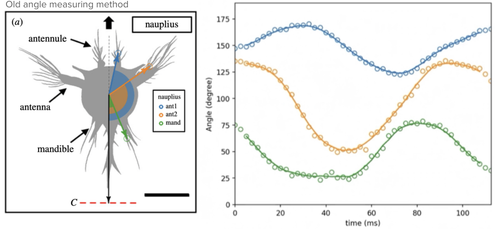
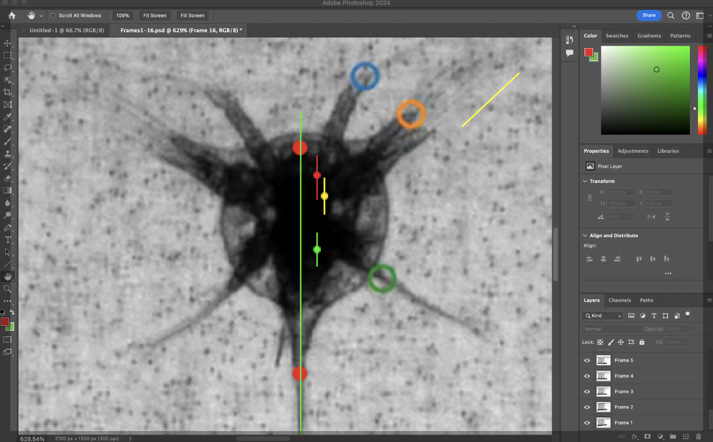
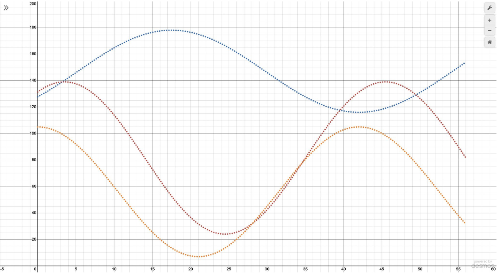
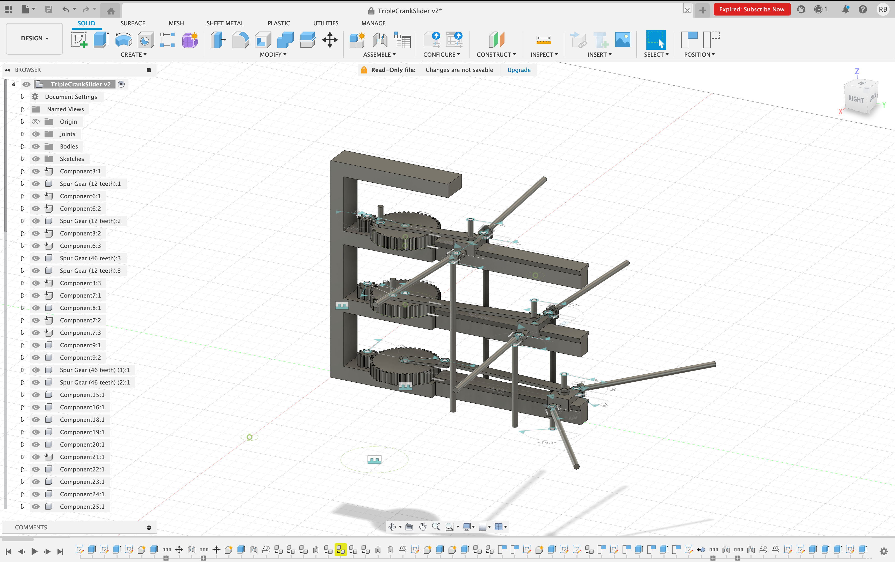
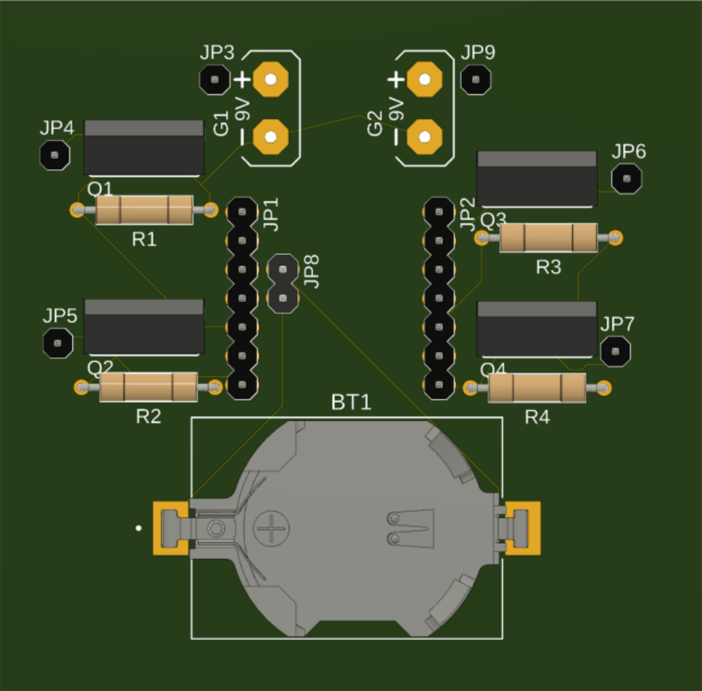
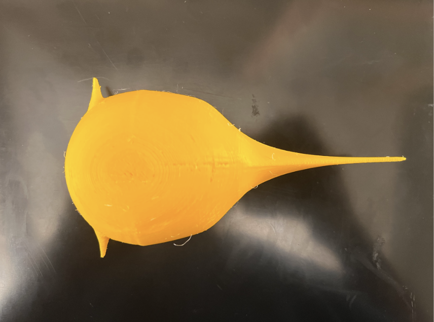
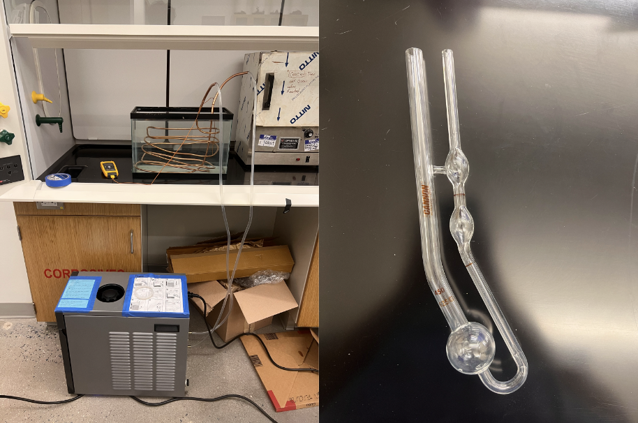

Summary
This project investigates how barnacle nauplii achieve propulsion in a low–Reynolds-number regime and translates their swimming kinematics into a mechanically actuated robotic model. I focused on correcting biological motion measurements, modeling appendage kinematics, and designing a mechanical stroke generation system capable of reproducing biologically accurate motion while operating at an equivalent Reynolds number.
- Re-measured appendage kinematics using joint-referenced angles
- Modeled stroke dynamics as sinusoidal functions of time
- Designed a mechanical transmission to replicate phase-offset appendage motion
- Developed an experimental setup to match Reynolds number via fluid viscosity
Problem and Constraints
Barnacle nauplii (Nauplius IV stage) swim at Reynolds numbers on the order of Re ≈ 2, where viscous forces dominate and inertia is negligible. In this regime:
- Reciprocal motion does not generate constant net propulsion
- Stroke asymmetry and phase timing are essential
- Scaling the organism up requires non-geometric similarity
The project goal was to design a robotic analog that:
- Reproduces nauplius swimming kinematics
- Operates at an equivalent Reynolds number
- Fits within experimental tank and fabrication constraints
Kinematic Modeling of Appendage Motion
Accurate mechanical replication required biologically meaningful measurements of appendage motion.
Limitations of prior measurements
Previous measurements defined appendage angles relative to the larval centroid, rather than about each appendage's hinge point. This introduced systematic error and obscured joint-level kinematics.

Joint-referenced angle measurement
I remeasured appendage angles directly about their hinge points using frame-by-frame image annotation in Photoshop. Reference axes were defined at each joint to extract true rotational motion.

Sinusoidal modeling
The corrected joint angles were modeled as sinusoidal functions of time, enabling explicit control of phase offsets, stroke amplitude, and asymmetry — and direct translation into mechanical actuation constraints.

Mechanical Stroke Generation
The kinematic models informed the design of a mechanical transmission system capable of producing coordinated, phase-offset appendage motion. The mechanism converts rotary input into controlled rotational motion at each appendage joint.

Control electronics
A custom PCB was designed to support synchronized actuation and power delivery for multiple appendages, enabling future closed-loop control and repeatable experimental trials.

Physical Prototype
Structural components were 3D printed to validate form factor, internal volume constraints, and appendage mounting geometry.

Reynolds Number Matching via Fluid Viscosity
Because the robotic model operates at a much larger scale than the biological larva, Reynolds number matching was achieved by increasing fluid viscosity. A temperature-controlled water bath and capillary viscometer were used to characterize candidate fluids as a function of temperature.

Results & Next Steps
Completed
- Viscosity–temperature characterization for multiple candidate fluids
- Selected corn syrup as working fluid — stable viscosity consistently achieves Re ≈ 2 within experimental temperature range
Next steps
- Integrate actuation with fluid testing to directly observe net propulsion
- Extend planar appendage motion to fully three-dimensional stroke kinematics